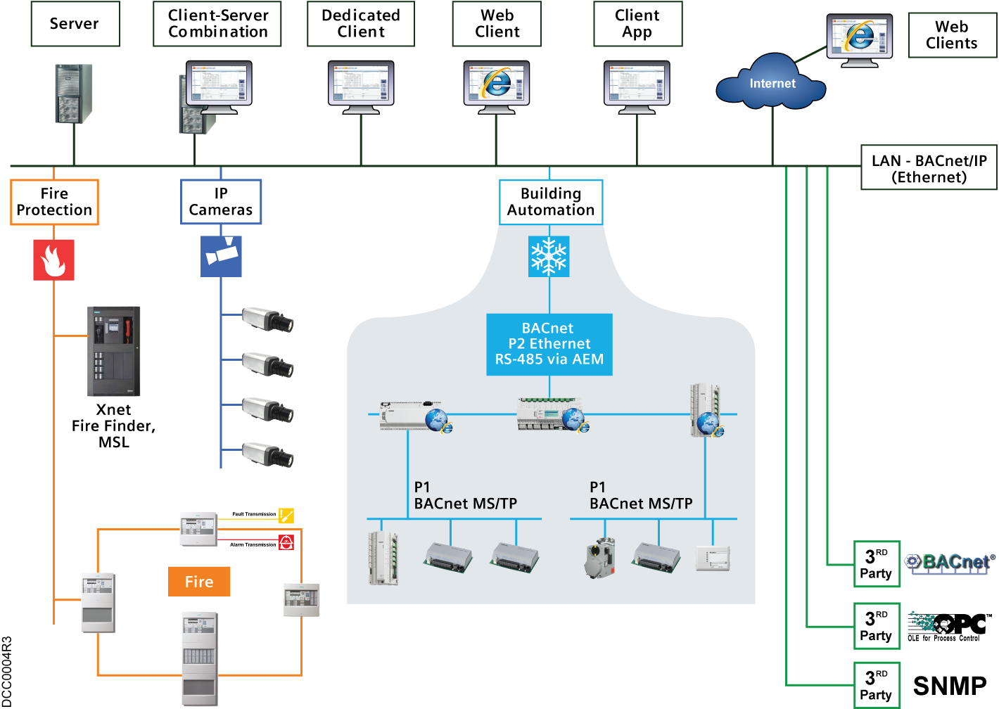

Overview of APOGEE Subsystem Integration
The Desigo CC management platform supports APOGEE P2 and APOGEE BACnet systems by providing the necessary communication drivers to connect to APOGEE P2 and APOGEE BACnet devices on the Building Automation segment of the network.
The following diagram highlights an APOGEE BACnet and an APOGEE P2 network, along with other networks for fire (UL 864/ULC S527-compliant) and video in a Total Building Solution (TBS) architecture.
In the Building Automation network segment, highlighted in gray, the illustration shows APOGEE P1 and APOGEE BACnet MS/TP FLNs. APOGEE BACnet MS/TP FLNs need one master device on each FLN. If all devices are configured as slaves, Desigo CC may not discover the FLN.

Commissioning a Job
Commissioning a job is not discussed as part of integration since the management station does not function as a commissioning tool. For commissioning work, such as creating physical points, use the Commissioning Tool and its documentation.